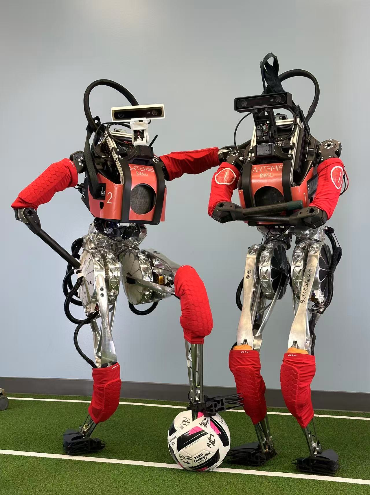

Humanoids · 2023–2024
RoboCup 2024 · ARTEMIS
Collision-aware navigation, dynamic locomotion, and competition deployment for the RoboCup 2024 adult-size humanoid world champions.
Overview
RoboCup requires humanoid robots to perceive, plan, and play soccer autonomously in a changing, adversarial environment. I was a core member of UCLA RoMeLa’s team in 2023 and 2024, working on ARTEMIS, our adult-sized humanoid soccer platform.
In 2024, our team won the adult-size humanoid championship, scoring 45 goals across six official matches. My contributions connected trajectory planning and tracking with reliable locomotion and the practical hardware work needed to deploy the robots on the competition field.
Navigation and trajectory tracking; locomotion tuning; hardware maintenance and competition deployment.
From simulation to the match field
We evaluated the navigation pipeline in simulation, in the laboratory, and during competition. Each setting exposed different demands: verifying the planning logic, testing the physical robot, and handling unpredictable opponents and noisy observations on the field.
The deployed system combines navigation with the team’s perception, localization, behavior planning, and locomotion modules. Together, these components allow ARTEMIS to approach the ball, avoid nearby obstacles, reposition, and execute powerful kicks during autonomous play.
Reliable hardware in the field
I helped maintain the ARTEMIS platforms from 2023 onward. My responsibilities included assembly and disassembly for transport, on-site staging, actuator testing, encoder calibration, wiring, and harness management.
I also designed and developed a mobile gantry for safely servicing the robot. This work supported routine laboratory operation as well as the rapid inspection and maintenance needed between competition matches.

Locomotion and kicking
I helped tune locomotion to preserve consistent walking and kicking performance after motor calibration and across different field surfaces. The work required considering the physical response of the robot alongside the motion commands generated by the software stack.
Experience with ARTEMIS’s locomotion framework later informed my work on Kid COSMO, where dynamic walking must coexist with expressive upper-body motion.
Related publications
- A Hierarchical, Model-Based System for High-Performance Humanoid Soccer
Advanced Intelligent Systems, 2026
- Model Predictive Control with Visibility Graphs for Humanoid Path Planning and Tracking Against Adversarial Opponents
IEEE International Conference on Robotics and Automation (ICRA), 2025
- Fast and Robust Localization for Humanoid Soccer Robot via Iterative Landmark Matching
International Conference on Ubiquitous Robots (UR), 2026
- RoboCup 2024 Adult-Sized Humanoid Champions Guide for Hardware, Vision, and Strategy
RoboCup 2024: Robot World Cup XXVII, Springer, published 2025